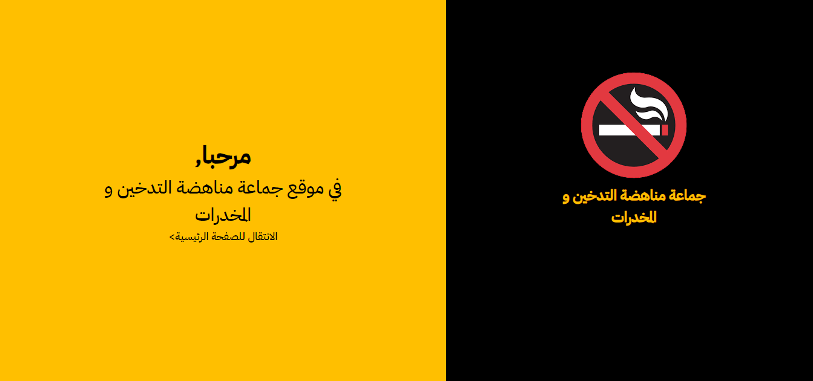
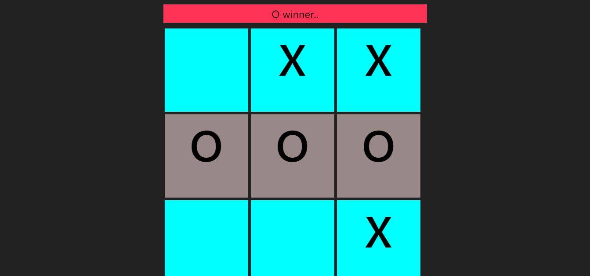
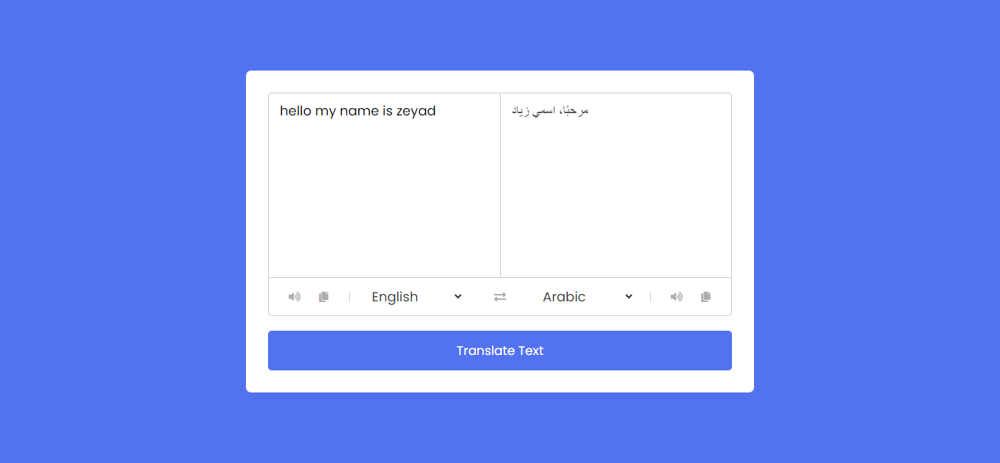
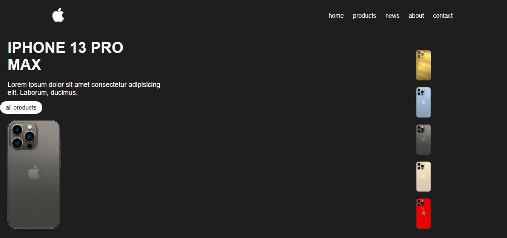
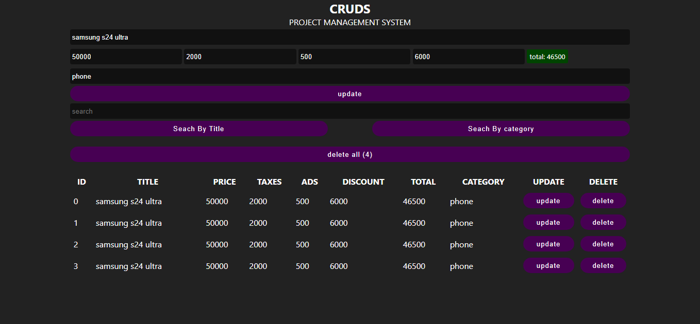
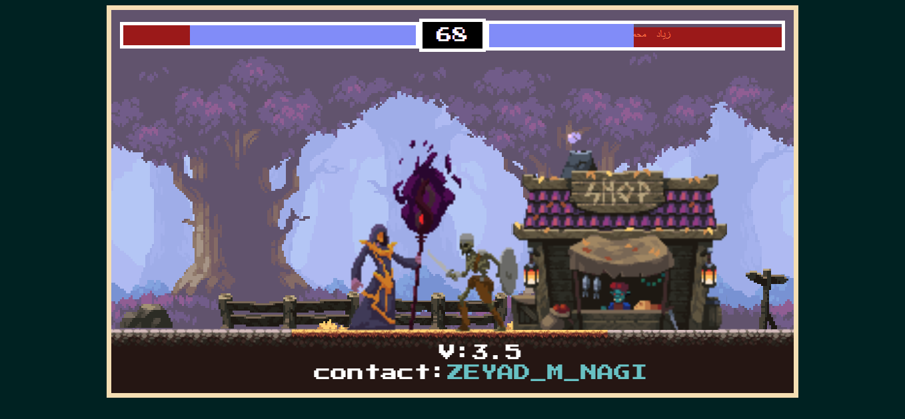
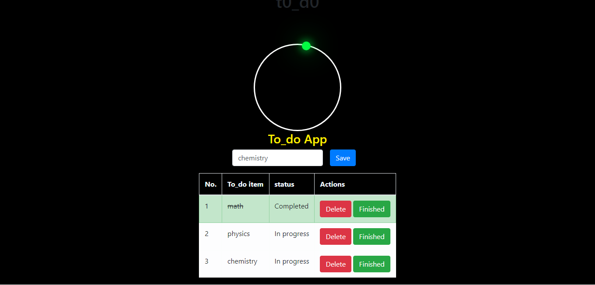
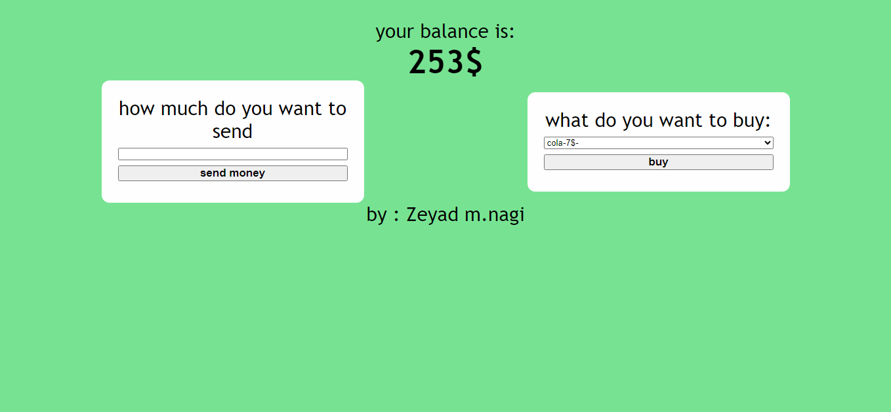

I was given a challenging project by 'The Anti-Smoking Group' to
create a website within a short timeframe. Despite the tight
deadline, I was able to successfully deliver the project within
three to four days.
The website was developed using HTML, CSS, and JavaScript, and it
has been designed to be visually attractive, user-friendly, and
highly functional. It has been optimized for all screen sizes and
devices, making it accessible to a wide audience. I used a
consistent color scheme and formatting to ensure ease of navigation
and quick access to information.
Overall, I am satisfied with the outcome of the project, and I
believe that the website will be an effective tool in helping 'The
Anti-Smoking Group' to spread awareness about the dangers of
smoking.

X-O game
As part of my professional development in JavaScript, I took on the
task of creating a tic-tac-toe game.
Although this project was not particularly challenging, it was still
a valuable exercise in honing my skills.

Language Translator App
One of our earliest projects was the development of a language
translator. Through this project, I was able to acquire the
necessary skills to utilize the JavaScript API and translate text
from any language to another.
Although it presented some moderate challenges, it was a valuable
experience that allowed me to enhance my abilities in this area."The
language translator was one of their earliest projects, and I
learned how to use the JavaScript API from it. With this knowledge,
I can now translate text from any language to another.
It was a moderately challenging project, but it helped me to develop
my skills."

Apple IPhone 13 Pro Project
The iPhone 13 Pro project was successfully executed with the
use of HTML and CSS, which enabled me to complete it efficiently
within a short period.
I am pleased to report that the task was accomplished with ease, and
I am confident that the final output meets the expected standards.

CRUD Application (Create, Read, Update, Delete)
The creation of the CRUD application, an acronym for create, read,
update, delete, was a highly challenging project that I successfully
completed. The task required extensive utilization of JavaScript and
local storage to develop a fully functional application that could
efficiently store data for items in a shop.
The application was designed to enable users to search for items by
their name or category and update them as needed. Despite the
difficulty of this project, I was able to successfully deliver a
quality application.

Fighter Game - A simple fighter game made using pureJS.
I have undertaken a significant project titled "Fighter" that
required more than a year of dedicated effort and over 15,000 lines
of code to add a variety of characters.
This project facilitates multiplayer mode, allowing two players to
combat against each other, while a single player mode is also
available.
Although the multiplayer mode is still under development, the
project is currently functional and offers a challenging yet
engaging experience.
I have exclusively utilized pure JavaScript to develop this
application and continue to learn more in order to complete it.
The project has become a source of entertainment for my family and
me.

T0D0 App.
The TO DO app is a moderately difficult project that I have
completed using a little bit of JavaScript.
In this project, I have created a new element to store data. You can
use this app to add tasks that you need to do for today. You can
mark them as done or add more tasks. Additionally, you can set a
specific time for each task. app is one of the moderate
difficulty projects that I have done where I used a little bit of
JavaScript to create a new element to install your data in this
project you can add install they you to do for today and you can
check them over to the them or add more or set time for them

Bank Balance Calculator
The development of the balance bank calculator was a
straightforward project, utilizing a combination of JavaScript,
HTML, and CSS to accurately calculate the balance.
The implementation of these technologies ensured that the calculator
was both user-friendly and efficient.

Photo Editor Project
I am pleased to share that I have completed a project
involving the development of a photo editor. Although it was not
without its challenges, the use of JavaScript and canvas proved to
be effective in creating a functional product.
As a result, I was able to incorporate a variety of features,
including brightness adjustments and several other editing
options.
Finally, I was able to successfully save the edited image.